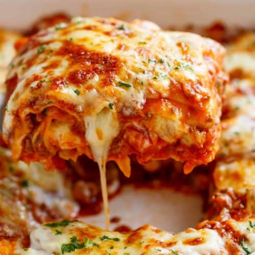

Lasagna

This mouthwatering delicious lasagna will have everybody in the household screaming for more!
Follow the directions properly and even Garfield will appear begging for some!
Ingredients
- 16 Ounce Package of Lasagna Noodles
- 1 Pound Lean Ground Beef
- Salt and Pepper to taste
- 16 Ounce Jar Spaghetti Sauce
- 1 Clove Garlic, MINCED
- 1/2 Pound Shredded Mozzarella Cheese
- 1/2 Pound Shredded Cheddar Cheese
- 1 Pint Ricotta Cheese
Directions
- Preheat Oven to 350 Degrees F (175 Degrees C)
- Bring a large pot of lightly salted water to a boil.
- Add pasta and cook for 8-10 minutes or untile al dente.
- Drain
- In a large skillet over medium-high heat, brown beef and season with salt and pepper
- Stir in Spaghetti Sauce and Garlic
- Simmer for 5 minutes
- In a medium bowl, combine Mozzarella, Cheddar, and Ricotta (Stir Well)
- ina 9x13 inch pan, alternate layers of noodles, meat mixture, and cheese mixture until pan is filled
- Bake in preheated oven for 30 minutes, or until cheese is melted and bubbly.
- ENJOY! (: